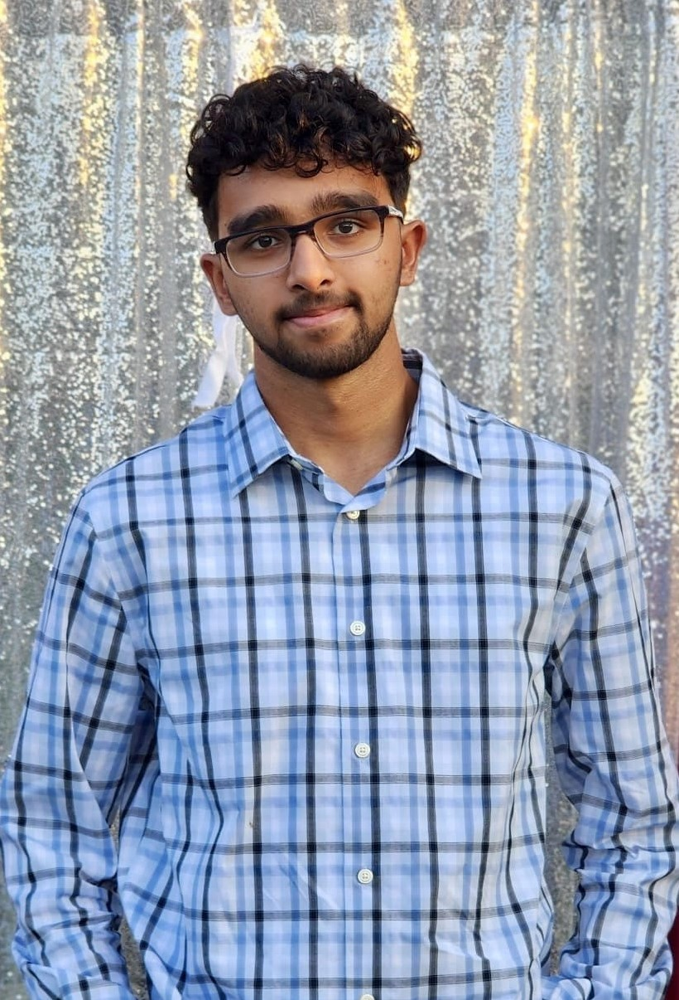

Furqan Ahcom

Summary
As an ambitious and multilingual high school student, I maintain a 3.9 GPA while pursuing a rigorous computer science and mathematics curriculum. I have developed proficiency in Java programming and application development
using Code.org, and I actively participate in Honor Societies for both Computer Science and Mathematics. My passion for leadership is evident in my role as the founding president of our high school's FBLA club, where I work to
foster business acumen among my peers. I have dedicated over 100 hours to community service, demonstrating my commitment to giving back. At Mission Bend Library, I apply my organizational skills to enhance user experience, balancing
my academic pursuits with practical work experience. Fluent in English, Urdu, Hindi, and Arabic, I bring a global perspective to my collaborations. I am seeking opportunities to apply my strong analytical, technical, and interpersonal skills
in a challenging environment that will foster my continued growth and learning. My goal is to leverage my diverse skill set and experiences to make meaningful contributions in the field of technology and business.
Education
Stephen F Austin High School
Graduated on May 25th, 2024
- GPA: 3.9
- Endorsement Efforts: Intro to Computer Science, AP Computer Science Principles, AP Computer Science A,
Computer Science 3
- Math Efforts: Algebra 1 PreAP, Geometry PreAP, Algebra 2 PreAP, Pre-Calculus, AP Calculus BC
- Honors: A and B Honor Roll, Academic Excellence Award, National Honor Society, AP Scholar, 100+
Volunteer Hours, Cum Laude Award
Professional Experience
Mission Bend Library
Book Shelf Organizer
- To save readers valuable time and effort by making it simpler to locate the books they desire. I implemented a
streamlined system for organizing books by number and author sequence on each shelf, resulting in a more
user-friendly experience for library visitors.
Book Scanning
- By conducting thorough scans of library books to identify any instances of damage, I promptly reported my
findings to the librarian for review, playing a crucial role in ensuring that the library maintains a high standard
of book quality and helps to preserve its positive image.
Science Olympiad
Competed for Austin High School
- Through careful brainstorming and innovative ideas, my partner and I collaborated and excelled in two challenging
competitions - the trajectory and bridge-build events. Our success was ultimately determined by our ability to meet all
competition criteria, which we achieved through critical thinking, meticulous planning, and unyielding determination.
Computer Science Honor Society
Active Member of Prestigious Club
Worked on numerous labs in Java and helped new students with their computer science assignments and homework.
Math Honor Society
Active Member of Presitigous Club
Expanded my math knowledge by learning tricks to efficiently find solutions for different types of problems, and
discussed faster solving processes among peers.
Leadership Experience
HouseHold Help
- As the eldest child in our family with three younger siblings, I take the pivotal role of caregiver whenever our
parents are busy, gaining essential knowledge on providing a sanctuary for kids while also learning how to
exercise composure through this experience.
High School FBLA Club President
- As the future club president, I’m leading the creation of a new high school club, the Future Business Leaders
of America (FBLA), which fosters leadership development, community service, and a deep understanding of
the business world among high school students.
Skills/Interests/Miscellaneous
- Multilingual: English, Urdu, Hindi, Arabic
- Proficient with Microsoft Office and Google Workspace
- Proficient in creating applications in Code.org
- Proficient in Java programming language
- Learning C language
- Learning Web Development
- Interested in technological advancements and Computer Science and Engineering
- Played varsity soccer for the High School
- Played for NCAC Cricket Club in the Houston Minor League
Hobbies
Contact Me